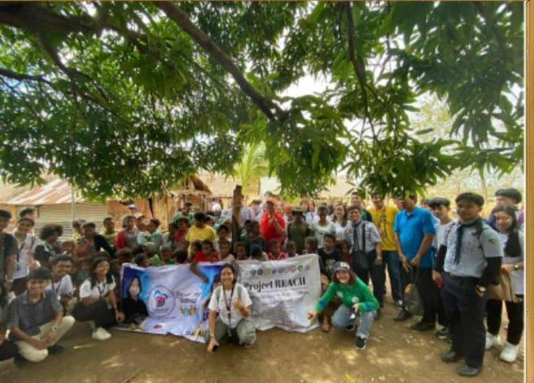
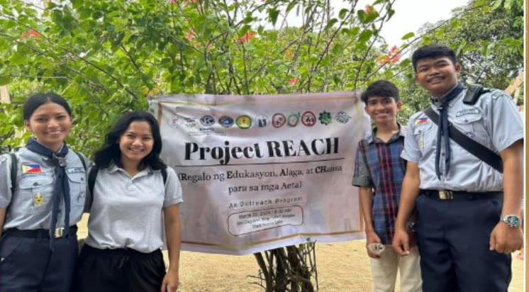
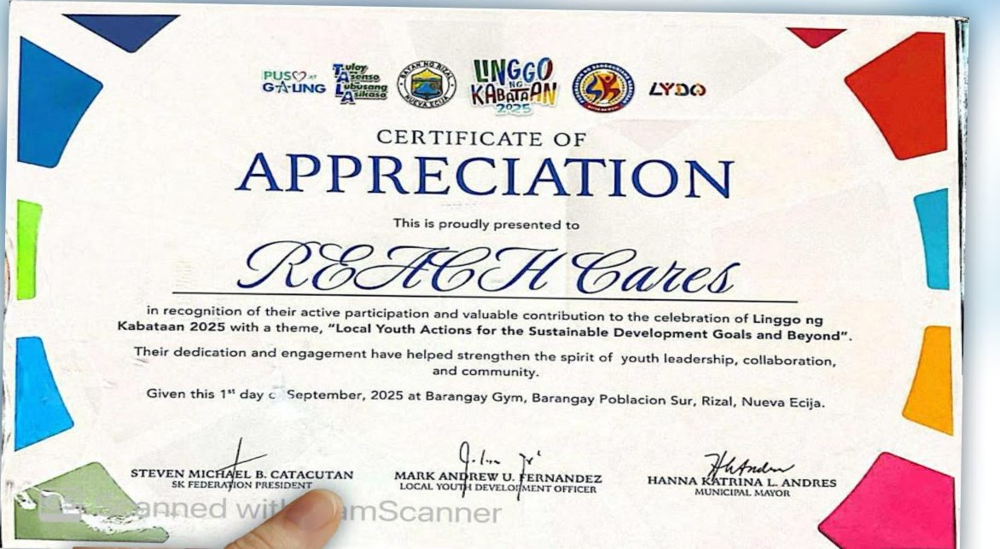
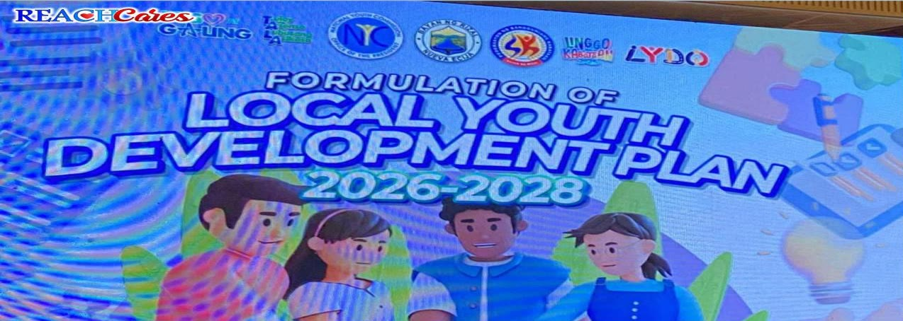
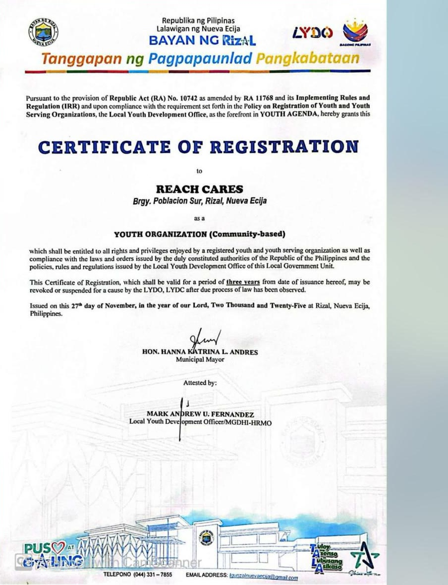
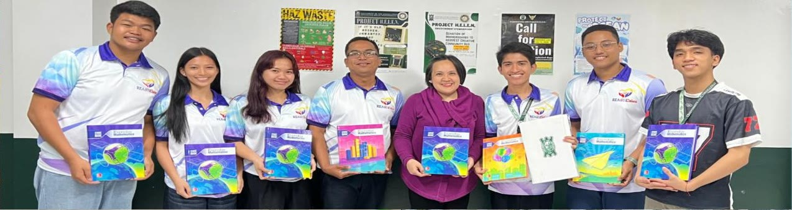
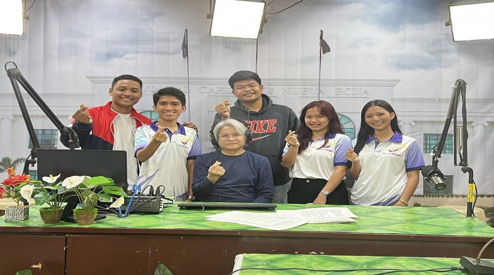
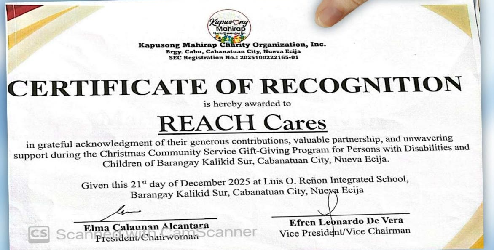
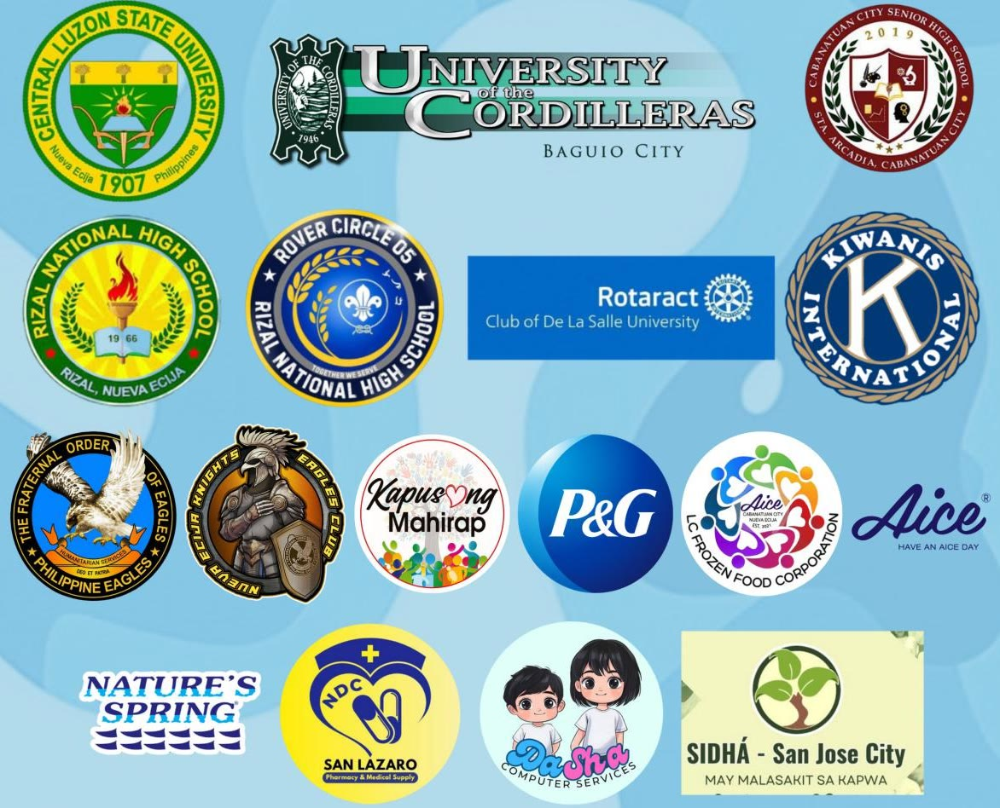
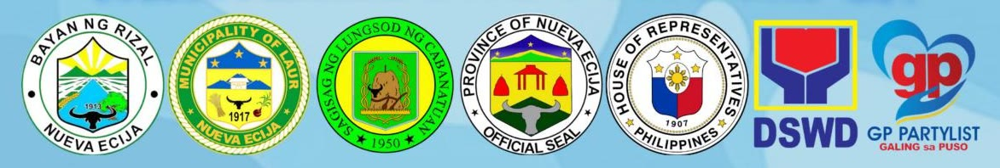

About us

REACH Cares proudly stands as a nationally recognized youth-serving organization, registered under the National Youth Commission's Youth Organization Registration Program (YORP) and accredited by the Local Youth Development Office of the Municipality of Rizal, Nueva Ecija. Our mission is driven by a deep commitment to community empowerment, youth leadership development, and social responsibility.
Aligned with the United Nations Sustainable Development Goals, REACH Cares envisions a future where young people are catalysts for meaningful change, transforming communities, promoting inclusivity, and creating sustainable solutions for the challenges of today and tomorrow. With limited resources but with a big heart, we continue to serve the most vulnerable communities and bring positive change in every way we can.
REACH — from the Tagalog word “Abutin”, meaning to reach out, symbolizes our commitment to actively extend a hand to those in need.
Cares — derived from “Malasakit”, representing genuine concern, compassion, and dedication to the welfare of fellow Filipinos.
Our story

March 13, 2024 – With the support of fellow student-leaders, Rover Scouts, and many generous volunteers, Project REACH (Regalo ng Edukasyon, Alaga, at CHansa) was launched to help the Aeta community of Villa Labrador, Rizal, Nueva Ecija. What started as a school project with the help of sponsors and private donors has grown into a youth-led movement helping more Filipinos in need.
Today, it has evolved into an organization known as REACH Cares.
From day one until today, Project REACH has been proudly supported by Rizal National High School, the alma mater of the people behind REACH Cares—where the journey of service truly began.
Mission & Vision
Mission
The organization shall empower young people to become active agents of change who embody the values of service, integrity, and global responsibility through meaningful projects, education, and advocacy aligned with the SDGs.
Vision
The organization envisions a dynamic and inclusive youth movement that fosters responsible citizenship, leadership, and lifelong commitment to sustainable community development.
Motto: REACHing Out To Serve!
Core Values
-
Responsibility in Service
We must be responsible to our actions and commitments. Serving the community means showing up, being accountable, and doing what is right even when no one is watching.
-
Empathy with Action
We listen, understand, and act. True compassion goes beyond words; it moves us to respond to the real needs of people with sincerity and respect.
-
Active Youth Leadership
We believe in the power of young people to lead, inspire, and create change. We lead with courage, creativity, and the passion to make a difference.
-
Commitment to Community
Our hearts are rooted in the communities we serve. We work together with others, building trust, unity, and hope through meaningful and lasting impact.
-
Heart for Purpose
Everything we do is driven by purpose. We serve with passion, integrity, and a genuine desire to uplift lives, guided by our values and love for service.
The Logo
- Heart
- The heart represents compassion as the foundation of our mission. While the organization is committed in empowering the youth, its service extends beyond age, background, or status. It symbolizes our commitment to ensure that every individual—children, youth, adults, and the marginalized—is treated with dignity, empathy, and care.
- Hands
- The hands forming the heart embody active service, shared responsibility, and unity in action. They represent young leaders working hand in hand with communities, partners, and stakeholders to create meaningful change. Though youth-led, REACH Cares believes that sustainable impact is achieved through collaboration across generations.
- Human figures
- The human figures inside the heart highlight that people are at the center of everything we do. They symbolize families, communities, and individuals whose voices matter. REACH Cares champions inclusion, empowering youth while also standing with women, children, and vulnerable sectors. It advocates equal opportunities for all.
- Stars
- The three stars represent the guiding values of Excellence, Hope, and Integrity that light the path of REACH Cares. Excellence reflects our commitment to deliver impactful, long-term services and to continuously develop youth leaders who strive for the best for their communities. Hope symbolizes optimism and belief in a better future, especially for those facing adversity, reminding us that every act of service can restore dignity and inspire change. Integrity stands for honesty, accountability, and ethical leadership, ensuring that all initiatives are carried out with transparency and trust.
- Sun
- The rising sun represents hope, light, and the promise of a brighter tomorrow. It signifies the organization's belief that empowering the youth today helps illuminate a sustainable future for everyone. Through education, skills development, and community service, REACH Cares nurtures resilience and leadership in our young people and communities to rise above challenges and become agents of positive change.
Milestones
-
March 13, 2024
Project REACH is launched
With the support of fellow student-leaders, Rover Scouts, and many generous volunteers, Project REACH (Regalo ng Edukasyon, Alaga, at CHansa) was launched to help the Aeta community of Villa Labrador, Rizal, Nueva Ecija.
-
September 1, 2025
Certificate of Appreciation
Presented to REACH Cares in recognition of its active participation and valuable contribution to the celebration of Linggo ng Kabataan 2025, at Barangay Gym, Barangay Poblacion Sur, Rizal, Nueva Ecija.

-
2025
Local Youth Development Plan
REACH Cares took part in the formulation of the Local Youth Development Plan (LYDP) for CY 2026–2028, a significant milestone in strengthening youth participation in local governance. This meaningful engagement allowed our organization to contribute insights, grassroots perspectives, and youth-centered advocacies aligned with education, social development, and community empowerment.

-
December 1, 2025
Registered organization in Rizal, Nueva Ecija
REACH Cares proudly stands as a registered youth-serving and community-based organization in Rizal, Nueva Ecija. Established from the dreams of every Rizaleño and committed to the progress and development of our beloved town.

-
December 7, 2025
Recognized under YORP
From a simple vision to empower the youth, REACH Cares has officially reached a new milestone! We are now fully recognized as a youth-serving and community-based organization under the National Youth Commission's Youth Organization Registration Program (YORP) through the recommendation of Local Youth Development Office of Rizal, Nueva Ecija. As a newly registered YORP organization, REACH Cares stands stronger and more committed than ever before. In service to the youth, in service to the people.
-
December 15, 2025
Meeting with the University of the Cordilleras
A meaningful and productive meeting with the University of the Cordilleras. A shared step forward for the Rizaleño youth. This collaboration reflects our common goal of creating opportunities, strengthening support systems, and opening doors for young people to grow, learn, and lead with purpose.

-
December 16, 2025
Guest on DWNE Teleradyo
REACH Cares was honored to be invited as a guest on DWNE Teleradyo, held at the Provincial Capitol of Nueva Ecija in Palayan City, Nueva Ecija, where we had the opportunity to present the mission, programs, and advocacy of our organization.

-
December 21, 2025
Certificate of Recognition
Awarded to REACH Cares by Kapusong Mahirap Charity Organization, Inc. in grateful acknowledgment of its generous contributions, valuable partnership, and unwavering support during the Christmas Community Service Gift-Giving Program for Persons with Disabilities and Children of Barangay Kalikid Sur, Cabanatuan City, Nueva Ecija.

Our Team
-
Marcelino O. Lagmay Jr.
Adviser
-
James Christian B. Cadiz
President
-
Aldrin James M. Gagarin
Deputy President
-
Althea Faith M. Martinez
Secretary General
-
Ysabelle M. Agne
Finance Secretary
-
John David G. Valdez
Resource Manager
-
Lance Niel Mendoza
Deputy Resource Manager
Sponsors & Partners

With assistance and support of
